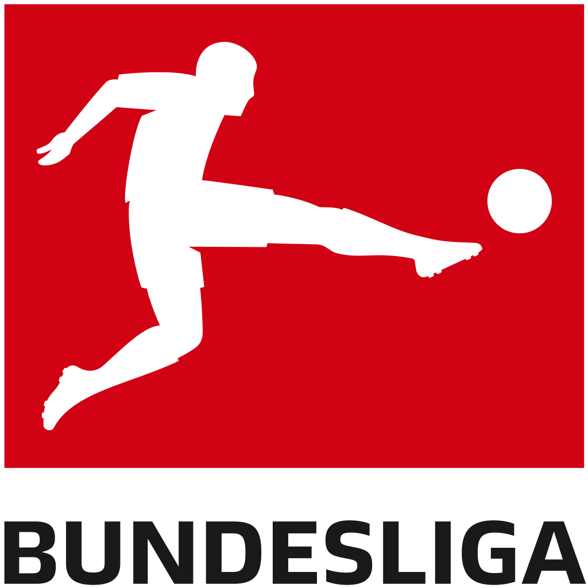

독일의 최상위 프로축구 리그로, 유럽을 대표하는 축구 리그 중 하나. 독일 축구 리그(Deutsche Fußball Liga)가 운영하고 독일 축구 연맹(Deutscher Fußball-Bund)과 리가페르반트(Die Liga – Fußballverband) 에서 주관하는 축구 리그이며. 독일의 축구리그 중 최상위리그이다. 이들이 곧 독일 국가대표팀이라 해도 과언이 아니다. 분데스리가는 독일과 오스트리아의 스포츠 리그를 뜻하는 말이다.[1] 핸드볼, 야구, 배구, 농구, 하키, 럭비 리그 등에도 분데스리가라는 이름을 쓰지만, 한국을 비롯하여 국제적으로도 분데스리가라고 하면 일반적으로 독일의 프로축구리그(푸스발-분데스리가: Fußball-Bundesliga)를 뜻한다. 뜻은 Bund(연방)와 Liga(리그)가 합쳐진 말로 '(독일) 연방의 리그'이다.
